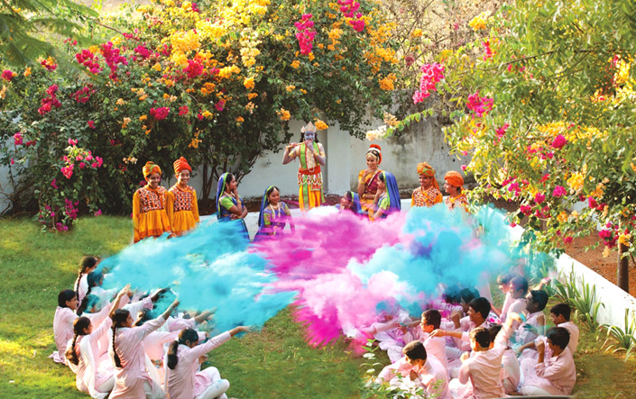
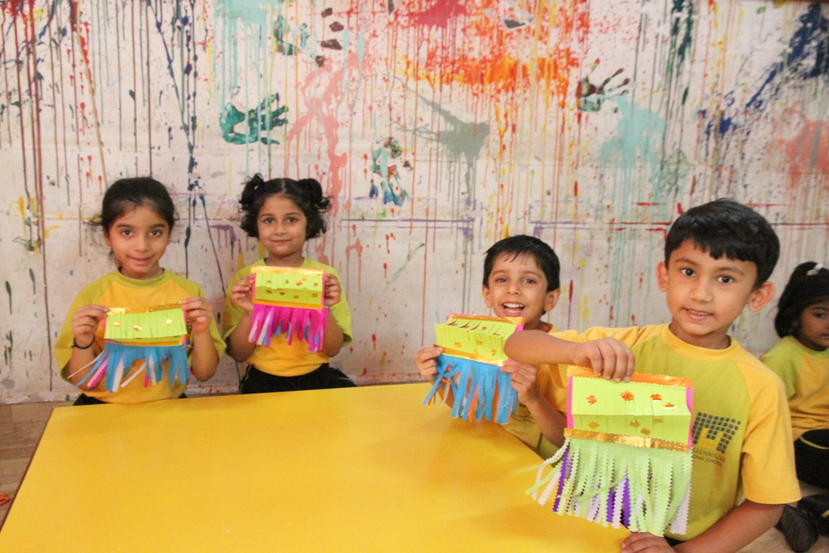
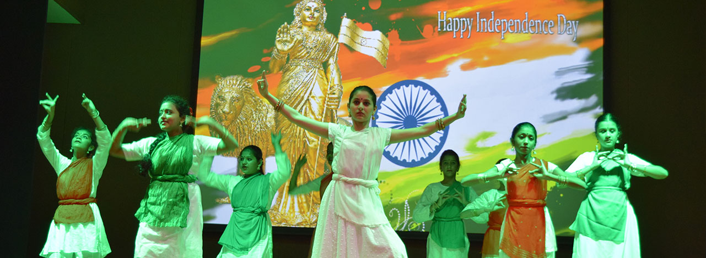

Apex Public School,Fatehabad |
| Home About School Principal's Message Features Staff Fee Structure Contact Us |
Outdoor GamesPlaygrounds are the best places to develop creativity amongst children where they can be themselves without having to fake their feelings and emotions. Most importantly, it develops vital cognitive and emotional skills that a child cannot acquire through leisure activities.A playground is an area where children go to play many outdoor games. It can be a small or a big area. A playground is a completely enclosed area which is full of equipment including swings, a merry-go-round, seesaws, slides, etc. There are short green grasses all over the playground. Generally, it is maintained by the gardeners. |
|
Indoor GamesThis is the greatest advantage of indoor games, as they can be played anytime and anywhere. Just like outdoor games, indoor games also provide entertainment and relaxation for children. Besides, they will improve children's hand-eye coordination,critical,thinking,and cognitive abilities.Indoor games include chess, card games, games played with gamesmen and dice and carrom. The game known by various names as Kachkavadya or Chaukabara, or Indian Ludo is very popular among indoor games. |
|
|  |
Festival CelebrationIndian festivals are based on religious beliefs. Indians worship various Gods and Goddesses and the various festivals they celebrate are dedicated to one deity or the other. These festivals are a way to offer prayers to the deities and seek their blessings to bring in happiness, prosperity and love.Every festival is celebrated as per its culture and religious practices with a lot of enthusiasm. Celebrating these festivals shows the unity that binds the people of India together. These celebrations commemorate our forefathers' noble actions as well as the triumph of virtue over evil. |
Diwali CelebrationThe farewell party is a time for celebration as the seniors leave the school to further their studies and enter into bigger colleges. They will get more chances to grow and succeed. For juniors, it is a time for celebration as their seniors are leaving with a legacy.A farewell party is a gathering held to say goodbye to someone who is leaving, whether it's a friend, family member, or coworker. It provides an opportunity to celebrate their achievements, express appreciation, and offer well wishes for their future endeavors.Opening: Anchor: Good evening, ladies and gentlemen! Welcome to the farewell party for our graduating seniors. |
 |
|  |
Cultural ActivityOn this day in the year 1947, India became independent from British colonial rule. This day we celebrate by unfurling the flag, singing the national anthem, remembering our freedom fighters, etc. This day is celebrated with great pleasure due to the national holiday of the country.On this day, we honour the heroic freedom fighters who gave their lives in the fight for our independence. This day in 1947 saw the end of British sovereignty over India. In New Delhi, the nation's capital, there is a significant cultural celebration in honour of this day. Millions of Indians have lost their lives in the freedom fight. |
Farewell PartyThe farewell party is a time for celebration as the seniors leave the school to further their studies and enter into bigger colleges. They will get more chances to grow and succeed. For juniors, it is a time for celebration as their seniors are leaving with a legacy.A farewell party is a gathering held to say goodbye to someone who is leaving, whether it's a friend, family member, or coworker. It provides an opportunity to celebrate their achievements, express appreciation, and offer well wishes for their future endeavors.Opening: Anchor: Good evening, ladies and gentlemen! Welcome to the farewell party for our graduating seniors. |
|
Home
About School Principal's Message Features Staff Fee Structure Contact Us |

|
This school claims to take personal care of each student ensuring that he is all the time relaxed and this is the peculiarity of this school. The enlightened people of the district Fatehabad who have watched the functioning of our school with considerable critical interest are the witness to the fact that the school has made a concrete academic contribution to the society. It has been reckoned as a school with difference perhaps unique in itself. The teaching approaches and the integrity of the staff and the administration are of the quality that a common school lacks. A particular mention must be made of the fact that what we know about education is being used very ingeniously to suit the needs of the children of our school. |